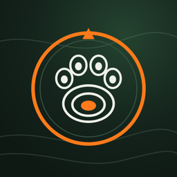

迷わず使えて、圏外でも頼れる。Alcyline は個人で運営している小さなアプリ開発ブランドです。
Simple to use, and dependable even without a signal. Alcyline is a small independent app studio.
山・家族・海。出かける人と、待つ家族のために。Mountains, family and sea — for the people who go out, and the family who waits.

クマなど野生動物の出没レーダーと対処法、撃退音、家族へのSOS。圏外でも使える地図で、登山や山菜採りの安全を支えます。
Wildlife sighting radar, encounter tips, deterrent sounds and SOS to family. Offline maps for hiking and foraging.
家族みんなの防災と安否確認のためのアプリ。避難所マップ、チェックインで、もしものときに家族とつながります。
Disaster preparedness and check-ins for the whole family, with an evacuation shelter map.
海水浴・潮干狩り・磯や堤防の釣りのための安全アプリ。危険な生き物を写真や質問で見分けられます。
A safety app for beach days, clam digging and shore fishing. Identify dangerous sea creatures by photo or by answering questions.